11 MLM, Longitudinal: Autism
Download/install a new GitHub package
install.packages("devtools")
devtools::install_github("sarbearschwartz/apaSupp") # updated 9/17/2025Load/activate these packages
library(HLMdiag) # package with the dataset
library(tidyverse)
library(flextable)
library(apaSupp) # Not on CRAN, on GitHub (see above)
library(psych)
library(VIM)
library(naniar)
library(lme4)
library(lmerTest)
library(optimx)
library(performance)
library(interactions)
library(emmeans)
library(ggResidpanel)
library(HLMdiag)
library(sjPlot)11.1 Background
The source: http://www-personal.umich.edu/~kwelch/
This data was collected by researchers at the University of Michigan (Anderson et al. 2009) as part of a prospective longitudinal study of 214 children. The children were divided into three diagnostic groups (bestest2) when they were 2 years old: Autism (autism), Pervasive Developmental Disorder (pdd), and non-spectrum children (none in this sample). The study was designed to collect information on each child at approximately 2, 3, 5, 9, and 13 years of age, although not all children were measured for each age. One of the study objectives was to assess the relative influence of the initial diagnostic category, language proficiency at age 2, and other covariates on the developmental trajectories of the socialization (vsae) of these children.
Study participants were children who had had consecutive referrals to one of two autism clinics before the age of 3 years. Social development was assessed at each age using the Vineland Adaptive Behavior Interview survey form, a parent-reported measure of socialization. VSAE (Vineland Socialization Age Equivalent), was a combined score that included assessments of interpersonal relationships, play/leisure time activities, and coping skills. Initial language development was assessed using the Sequenced Inventory of Communication Development (SICD) scale; children were placed into one of three groups (sicdegp) based on their initial SICD scores on the expressive language subscale at age 2.
childidChild’s identification number for this studysicdegpSequenced Inventory of Communication Development group (an assessment of expressive language development) - a factor. Levels arelow,med, andhighage2Age (in years) centered around age 2 (age at diagnosis)vsaeVineland Socialization Age Equivalent, Parent-reported measure of socialization, including measures of:interpersonal relationships
play/leisure time activities
coping skills
genderChild’s gender - a factor. Levels aremaleandfemaleraceChild’s race - a factor. Levels arewhiteandnonwhitebestest2Diagnosis at age 2 - a factor. Levels areautismandpdd(pervasive developmental disorder)
Rows: 604
Columns: 7
$ childid <int> 1, 1, 1, 1, 1, 10, 10, 10, 10, 100, 100, 100, 100, 101, 101, …
$ sicdegp <fct> high, high, high, high, high, low, low, low, low, high, high,…
$ age2 <dbl> 0, 1, 3, 7, 11, 0, 1, 7, 11, 0, 1, 3, 7, 0, 1, 7, 11, 0, 1, 3…
$ vsae <int> 6, 7, 18, 25, 27, 9, 11, 18, 39, 15, 24, 37, 135, 8, 24, 75, …
$ gender <fct> male, male, male, male, male, male, male, male, male, male, m…
$ race <fct> white, white, white, white, white, white, white, white, white…
$ bestest2 <fct> pdd, pdd, pdd, pdd, pdd, autism, autism, autism, autism, pdd,…11.1.1 Long Format
data_long <- autism %>% # save the dataset as a new name
dplyr::mutate(childid = childid %>% factor) %>% # declare grouping var a factor
dplyr::mutate(age = 2 + age2) %>% # create the original age variable (unequally spaced)
dplyr::mutate(obs = age %>% factor %>% as.numeric) %>% # Observation Number = 1, 2, 3, 4, 5 (equally spaced)
dplyr::select(childid, # choose variables and order to keep
gender, race, bestest2, sicdegp,
obs, age, age2, vsae) %>%
dplyr::arrange(childid, age2) # sort observationsdata_long %>%
psych::headTail(top = 11, bottom = 6) %>%
flextable::flextable() %>%
apaSupp::theme_apa(caption = "Part of the Dataset")childid | gender | race | bestest2 | sicdegp | obs | age | age2 | vsae |
|---|---|---|---|---|---|---|---|---|
1 | male | white | pdd | high | 1 | 2 | 0 | 6 |
1 | male | white | pdd | high | 2 | 3 | 1 | 7 |
1 | male | white | pdd | high | 3 | 5 | 3 | 18 |
1 | male | white | pdd | high | 4 | 9 | 7 | 25 |
1 | male | white | pdd | high | 5 | 13 | 11 | 27 |
2 | male | white | autism | low | 1 | 2 | 0 | 6 |
2 | male | white | autism | low | 2 | 3 | 1 | 7 |
2 | male | white | autism | low | 3 | 5 | 3 | 7 |
2 | male | white | autism | low | 4 | 9 | 7 | 8 |
2 | male | white | autism | low | 5 | 13 | 11 | 14 |
3 | male | nonwhite | pdd | high | 1 | 2 | 0 | 17 |
... | ... | ... | ... | |||||
211 | male | nonwhite | autism | high | 1 | 2 | 0 | 15 |
212 | male | white | autism | med | 1 | 2 | 0 | 7 |
212 | male | white | autism | med | 2 | 3 | 1 | 21 |
212 | male | white | autism | med | 3 | 5 | 3 | 29 |
212 | male | white | autism | med | 4 | 9 | 7 | 72 |
212 | male | white | autism | med | 5 | 13 | 11 | 147 |
11.1.2 Wide Format
data_wide <- data_long %>% # save the dataset as a new name
dplyr::select(-age2, -obs) %>% # delete (by deselecting) this variable
tidyr::pivot_wider(names_from = age, # repeated indicator
values_from = vsae, # variable repeated
names_prefix = "vsae_") %>% # prefix in from of the
dplyr::arrange(childid) # sort observationsRows: 155
Columns: 10
$ childid <fct> 1, 2, 3, 4, 6, 8, 9, 10, 12, 13, 14, 15, 16, 17, 18, 19, 21, …
$ gender <fct> male, male, male, male, male, male, male, male, male, male, m…
$ race <fct> white, white, nonwhite, nonwhite, white, nonwhite, white, whi…
$ bestest2 <fct> pdd, autism, pdd, autism, autism, autism, pdd, autism, autism…
$ sicdegp <fct> high, low, high, high, low, low, med, low, med, low, med, med…
$ vsae_2 <int> 6, 6, 17, 12, 6, 9, 12, 9, 7, 6, 12, 13, 7, 5, 10, 17, 11, 11…
$ vsae_3 <int> 7, 7, 18, 14, 12, 12, 21, 11, 10, 10, 19, 8, 6, 10, 6, 27, 21…
$ vsae_5 <int> 18, 7, 12, 38, NA, 14, NA, NA, 8, 12, 14, 29, NA, 29, NA, NA,…
$ vsae_9 <int> 25, 8, 18, 114, 12, NA, 66, 18, NA, NA, 28, 24, 39, 32, NA, 7…
$ vsae_13 <int> 27, 14, 24, NA, 45, NA, 68, 39, NA, NA, 68, 44, 24, 67, NA, 1…Notice the missing values, displayed as NA.
childid gender race bestest2 sicdegp vsae_2 vsae_3 vsae_5 vsae_9 vsae_13
1 1 male white pdd high 6 7 18 25 27
2 2 male white autism low 6 7 7 8 14
3 3 male nonwhite pdd high 17 18 12 18 24
4 4 male nonwhite autism high 12 14 38 114 <NA>
5 <NA> <NA> <NA> <NA> <NA> ... ... ... ... ...
6 209 male white autism med 2 4 <NA> 12 32
7 210 male white autism low 4 25 <NA> 130 <NA>
8 211 male nonwhite autism high 15 <NA> <NA> <NA> <NA>
9 212 male white autism med 7 21 29 72 14711.2 Exploratory Data Analysis
11.2.1 Demographic Summary
11.2.1.1 Using the WIDE formatted dataset
Each person’s data is only stored on a single line
data_wide %>%
dplyr::select(sicdegp,
"Diagnosis" = bestest2,
"Gender" = gender,
"Race" = race) %>%
apaSupp::tab1(split = "sicdegp",
caption = "Demographic Summary by Initial Lanuguage Development")
| Total | low | med | high | p-value |
|---|---|---|---|---|---|
Diagnosis | .018* | ||||
autism | 100 (64.5%) | 38 (77.6%) | 42 (64.6%) | 20 (48.8%) | |
pdd | 55 (35.5%) | 11 (22.4%) | 23 (35.4%) | 21 (51.2%) | |
Gender | .706 | ||||
male | 134 (86.5%) | 44 (89.8%) | 55 (84.6%) | 35 (85.4%) | |
female | 21 (13.5%) | 5 (10.2%) | 10 (15.4%) | 6 (14.6%) | |
Race | .944 | ||||
white | 101 (65.2%) | 31 (63.3%) | 43 (66.2%) | 27 (65.9%) | |
nonwhite | 54 (34.8%) | 18 (36.7%) | 22 (33.8%) | 14 (34.1%) | |
Note. . . | |||||
* p < .05. ** p < .01. *** p < .001. | |||||
11.2.1.2 Using the LONG formatted dataset
Each person’s data is stored on multiple lines, one for each time point. To ensure the summary table is correct, you must choose a single time point per person.
# Note: One person is missing Age 2
data_long %>%
dplyr::filter(age == 2) %>% # restrict to one-line per person
dplyr::select(sicdegp,
"Diagnosis" = bestest2,
"Gender" = gender,
"Race" = race) %>%
apaSupp::tab1(split = "sicdegp",
caption = "Demographic Summary by Initial Lanuguage Development")
| Total | low | med | high | p-value |
|---|---|---|---|---|---|
Diagnosis | .025* | ||||
autism | 100 (64.9%) | 38 (77.6%) | 42 (64.6%) | 20 (50.0%) | |
pdd | 54 (35.1%) | 11 (22.4%) | 23 (35.4%) | 20 (50.0%) | |
Gender | .714 | ||||
male | 134 (87.0%) | 44 (89.8%) | 55 (84.6%) | 35 (87.5%) | |
female | 20 (13.0%) | 5 (10.2%) | 10 (15.4%) | 5 (12.5%) | |
Race | .950 | ||||
white | 100 (64.9%) | 31 (63.3%) | 43 (66.2%) | 26 (65.0%) | |
nonwhite | 54 (35.1%) | 18 (36.7%) | 22 (33.8%) | 14 (35.0%) | |
Note. . . | |||||
* p < .05. ** p < .01. *** p < .001. | |||||
11.2.2 Baseline Summary
11.2.2.1 Using the WIDE formatted dataset
Each person’s data is only stored on a single line
| Total | low | med | high | p-value |
|---|---|---|---|---|---|
vsae_2 | 9.16 (3.84) | 7.06 (2.73) | 8.74 (3.51) | 12.40 (3.43) | < .001*** |
Unknown | 1 | 0 | 0 | 1 | |
Note. Continuous variables are summarized with means (SD) and significant group differences assessed via independent one-way analysis of vaiance (ANOVA). Categorical variables are summarized with counts (%) and significant group differences assessed via Chi-squared tests for independence. | |||||
* p < .05. ** p < .01. *** p < .001. | |||||
11.2.2.2 Using the LONG formatted dataset
Each person’s data is stored on multiple lines, one for each time point. To ensure the summary table is correct, you must choose a single time point per person.
data_long %>%
dplyr::filter(age == 2) %>%
dplyr::select(sicdegp, vsae) %>%
apaSupp::tab1(split = "sicdegp")
| Total | low | med | high | p-value |
|---|---|---|---|---|---|
vsae | 9.16 (3.84) | 7.06 (2.73) | 8.74 (3.51) | 12.40 (3.43) | < .001*** |
Note. Continuous variables are summarized with means (SD) and significant group differences assessed via independent one-way analysis of vaiance (ANOVA). Categorical variables are summarized with counts (%) and significant group differences assessed via Chi-squared tests for independence. | |||||
* p < .05. ** p < .01. *** p < .001. | |||||
11.2.3 Missing Data & Attrition
11.2.3.1 VIM package
Plot the amount of missing vlaues and the amount of each patter of missing values.
data_wide %>%
VIM::aggr(numbers = TRUE, # shows the number to the far right
prop = FALSE) # shows counts instead of proportions
11.2.3.2 naniar package


data_wide %>%
naniar::gg_miss_var(show_pct = TRUE, # x-axis is PERCENT, not count
facet = sicdegp) + # create seperate panels
theme_bw() # add ggplot layers as normal
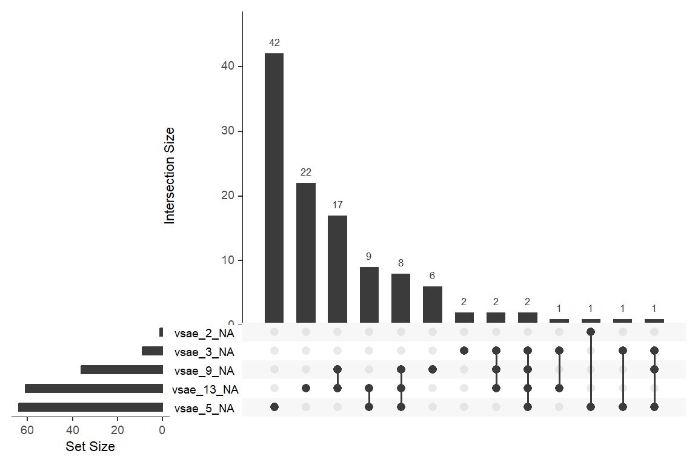
data_wide %>%
naniar::gg_miss_upset(sets = c("vsae_13_NA",
"vsae_9_NA",
"vsae_5_NA",
"vsae_3_NA",
"vsae_2_NA"),
keep.order = TRUE) 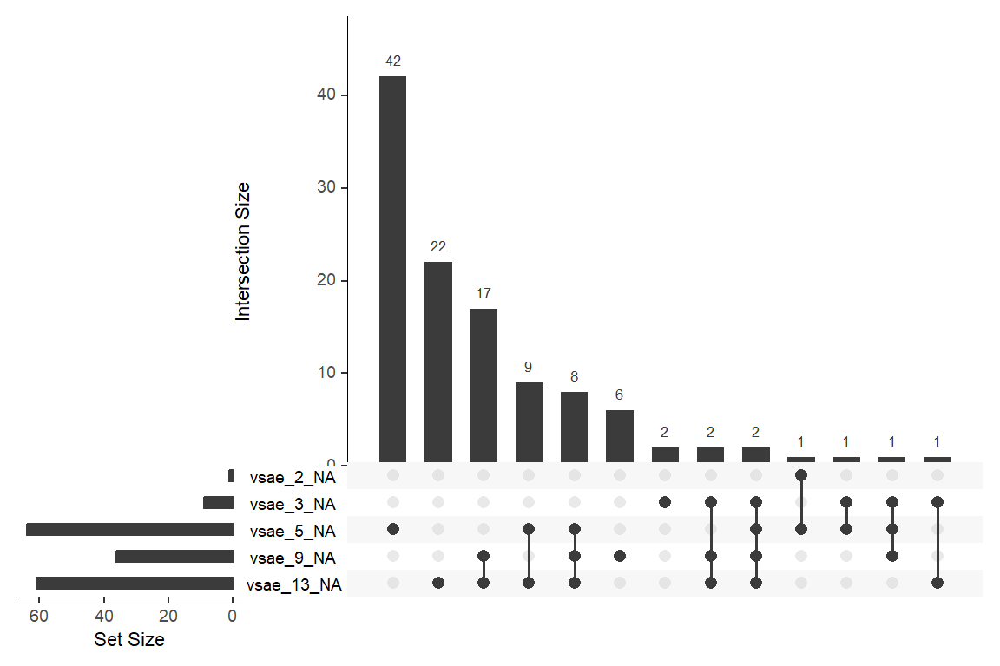
11.2.4 Means Across Time
11.2.4.1 Using the WIDE formatted dataset
data_wide %>%
dplyr::select(sicdegp,
"Age 2" = vsae_2,
"Age 3" = vsae_3,
"Age 5" = vsae_5,
"Age 9" = vsae_9,
"Age 13" = vsae_13) %>%
apaSupp::tab1(split = "sicdegp",
caption = "Summary of Vineland Socialization at each Observation by Initial Lanuguage Development",
general_note = "The Vineland Socialization is an Age Equivalent, Parent-reported measure of socialization combined score that included assessments of interpersonal relationships, play/leisure time activities, and coping skills.")
| Total | low | med | high | p-value |
|---|---|---|---|---|---|
Age 2 | 9.16 (3.84) | 7.06 (2.73) | 8.74 (3.51) | 12.40 (3.43) | < .001*** |
Unknown | 1 | 0 | 0 | 1 | |
Age 3 | 15.12 (7.81) | 12.02 (6.33) | 13.68 (5.42) | 21.24 (9.38) | < .001*** |
Unknown | 9 | 3 | 3 | 3 | |
Age 5 | 21.48 (13.32) | 15.03 (7.92) | 17.69 (8.00) | 33.92 (15.78) | < .001*** |
Unknown | 64 | 20 | 29 | 15 | |
Age 9 | 39.55 (32.62) | 25.56 (28.42) | 32.13 (23.40) | 64.14 (34.59) | < .001*** |
Unknown | 36 | 13 | 17 | 6 | |
Age 13 | 59.49 (47.96) | 37.11 (35.54) | 56.18 (47.91) | 88.69 (46.34) | < .001*** |
Unknown | 61 | 21 | 25 | 15 | |
Note. Continuous variables are summarized with means (SD) and significant group differences assessed via independent one-way analysis of vaiance (ANOVA). Categorical variables are summarized with counts (%) and significant group differences assessed via Chi-squared tests for independence. The Vineland Socialization is an Age Equivalent, Parent-reported measure of socialization combined score that included assessments of interpersonal relationships, play/leisure time activities, and coping skills. | |||||
* p < .05. ** p < .01. *** p < .001. | |||||
11.2.4.2 Using the LONG formatted dataset
Each person’s data is stored on multiple lines, one for each time point.
FOR ALL DATA!
data_long %>%
dplyr::group_by(sicdegp, age2) %>% # specify the groups
dplyr::summarise(vsae_n = n(), # count of valid scores
vsae_mean = mean(vsae), # mean score
vsae_sd = sd(vsae), # standard deviation of scores
vsae_sem = vsae_sd / sqrt(vsae_n)) %>% # stadard error for the mean of scores
flextable::as_grouped_data(groups = "sicdegp") %>%
flextable::flextable() %>%
apaSupp::theme_apa()sicdegp | age2 | vsae_n | vsae_mean | vsae_sd | vsae_sem |
|---|---|---|---|---|---|
low | |||||
0.00 | 49 | 7.06 | 2.73 | 0.39 | |
1.00 | 46 | 12.02 | 6.33 | 0.93 | |
3.00 | 29 | 15.03 | 7.92 | 1.47 | |
7.00 | 36 | 25.56 | 28.42 | 4.74 | |
11.00 | 28 | 37.11 | 35.54 | 6.72 | |
med | |||||
0.00 | 65 | 8.74 | 3.51 | 0.44 | |
1.00 | 62 | 13.68 | 5.42 | 0.69 | |
3.00 | 36 | 17.69 | 8.00 | 1.33 | |
7.00 | 48 | 32.12 | 23.40 | 3.38 | |
11.00 | 40 | 56.17 | 47.91 | 7.58 | |
high | |||||
0.00 | 40 | 12.40 | 3.43 | 0.54 | |
1.00 | 38 | 21.24 | 9.38 | 1.52 | |
3.00 | 26 | 33.92 | 15.78 | 3.09 | |
7.00 | 35 | 64.14 | 34.59 | 5.85 | |
11.00 | 26 | 88.69 | 46.34 | 9.09 |
FOR COMPLETE CASES ONLY!!!
data_long %>%
dplyr::group_by(childid) %>% # group-by child
dplyr::mutate(child_vsae_n = n()) %>% # count the number of valid VSAE scores
dplyr::filter(child_vsae_n == 5) %>% # restrict to only thoes children with 5 valid scores
dplyr::group_by(sicdegp, age2) %>% # specify the groups
dplyr::summarise(vsae_n = n(), # count of valid scores
vsae_mean = mean(vsae), # mean score
vsae_sd = sd(vsae), # standard deviation of scores
vsae_sem = vsae_sd / sqrt(vsae_n)) %>% # stadard error for the mean of scores
flextable::as_grouped_data(groups = "sicdegp") %>%
flextable::flextable() %>%
apaSupp::theme_apa()sicdegp | age2 | vsae_n | vsae_mean | vsae_sd | vsae_sem |
|---|---|---|---|---|---|
low | |||||
0.00 | 10 | 6.60 | 2.88 | 0.91 | |
1.00 | 10 | 8.00 | 2.11 | 0.67 | |
3.00 | 10 | 12.50 | 5.54 | 1.75 | |
7.00 | 10 | 12.30 | 8.07 | 2.55 | |
11.00 | 10 | 22.40 | 24.45 | 7.73 | |
med | |||||
0.00 | 17 | 9.47 | 4.12 | 1.00 | |
1.00 | 17 | 14.29 | 6.08 | 1.47 | |
3.00 | 17 | 20.18 | 8.57 | 2.08 | |
7.00 | 17 | 34.41 | 22.54 | 5.47 | |
11.00 | 17 | 57.82 | 50.33 | 12.21 | |
high | |||||
0.00 | 14 | 12.50 | 4.09 | 1.09 | |
1.00 | 14 | 19.50 | 6.15 | 1.64 | |
3.00 | 14 | 33.93 | 18.50 | 4.94 | |
7.00 | 14 | 56.86 | 23.54 | 6.29 | |
11.00 | 14 | 80.93 | 44.38 | 11.86 |
11.2.5 Person Profile Plots
Use the data in LONG format
11.2.5.1 Unequally Spaced
data_long %>%
dplyr::mutate(sicdegp = fct_recode(sicdegp,
"Low Communication" = "low",
"Medium Communication" = "med",
"High Communication" = "high")) %>%
ggplot(aes(x = age,
y = vsae)) +
geom_point(size = 0.75) +
geom_line(aes(group = childid),
alpha = .5,
size = 1) +
facet_grid(. ~ sicdegp) +
theme_bw() +
scale_x_continuous(breaks = c(2, 3, 5, 9, 13)) +
labs(x = "Age of Child, Years",
y = "Vineland Socialization Age Equivalent",
color = "Sequenced Inventory of Communication Development") +
geom_smooth(aes(color = "Flexible"),
method = "loess",
se = FALSE,) +
geom_smooth(aes(color = "Linear"),
method = "lm",
se = FALSE) +
scale_color_manual(name = "Smoother Type: ",
values = c("Flexible" = "blue",
"Linear" = "red")) +
theme(legend.position = "bottom",
legend.key.width = unit(2, "cm"))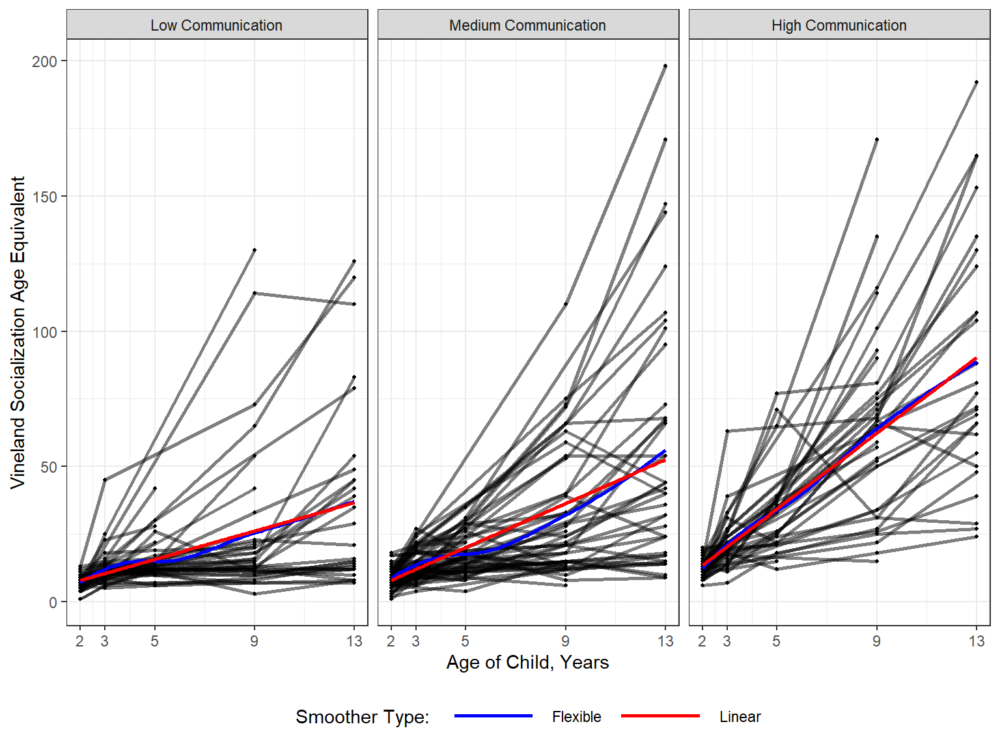
11.2.5.2 Equally Spaced
data_long %>%
dplyr::mutate(sicdegp = fct_recode(sicdegp,
"Low Communication" = "low",
"Medium Communication" = "med",
"High Communication" = "high")) %>%
ggplot(aes(x = obs,
y = vsae)) +
geom_point(size = 0.75) +
geom_line(aes(group = childid),
alpha = .5,
size = 1) +
facet_grid(. ~ sicdegp) +
theme_bw() +
labs(x = "Observation Number",
y = "Vineland Socialization Age Equivalent",
color = "Sequenced Inventory of Communication Development") +
geom_smooth(aes(color = "Flexible"),
method = "loess",
se = FALSE,) +
geom_smooth(aes(color = "Linear"),
method = "lm",
se = FALSE) +
scale_color_manual(name = "Smoother Type: ",
values = c("Flexible" = "blue",
"Linear" = "red")) +
theme(legend.position = "bottom",
legend.key.width = unit(2, "cm"))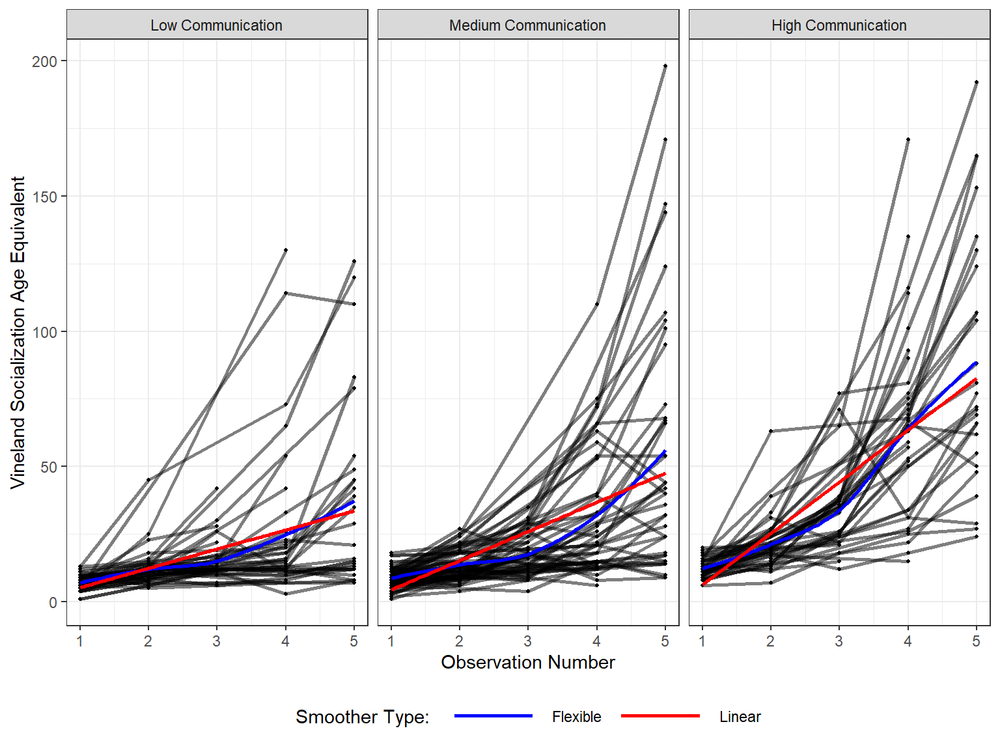
11.2.6 Side-by-side Boxplots
data_long %>%
ggplot(aes(x = sicdegp,
y = vsae,
fill = sicdegp)) +
geom_boxplot() +
theme_bw() +
facet_grid(. ~ age,
labeller = "label_both") +
theme(legend.position = "none") +
labs(x = "Initial Language Development\nSequenced Inventory of Communication Development (SICD) at Age 2",
y = "Parent-Reported Measure of Socialization\nVineland Socialization Age Equivalent")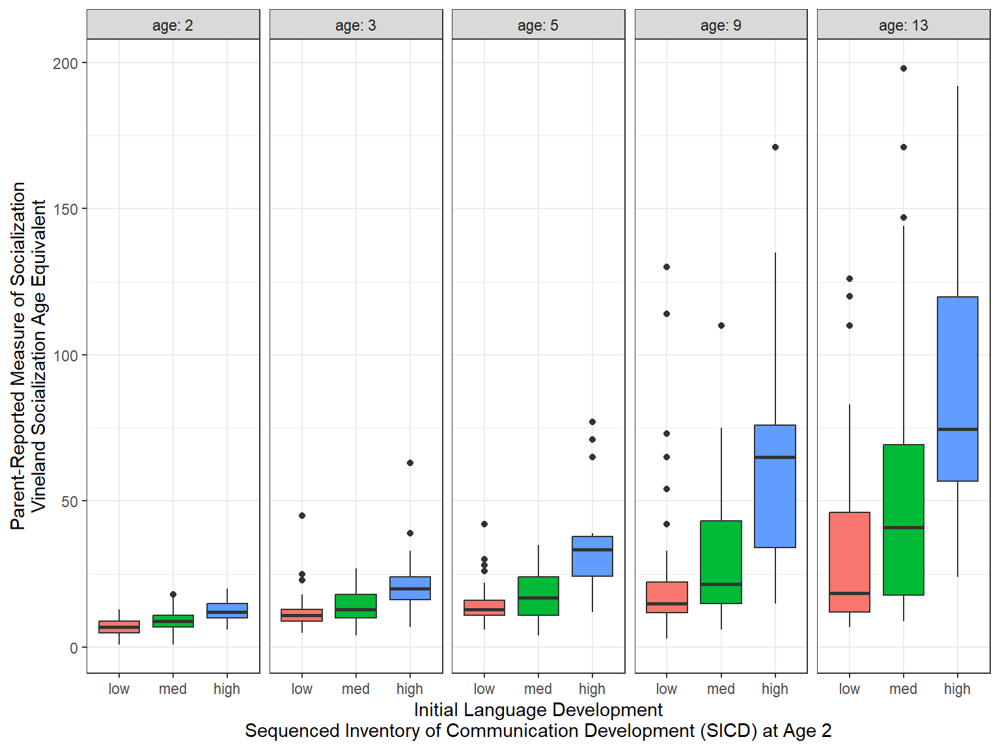
11.2.7 Means Plots
11.2.7.1 Default stat_summary
It is nice that the stat_summary() layer computes the standard error for the mean for you using the data in LONG format
data_long %>%
ggplot(aes(x = age,
y = vsae,
color = sicdegp)) +
stat_summary() + # default: points at MEAN and extend vertically 1 standard error for the mean
stat_summary(fun = "mean", # plot the means
geom = "line") + # ...and connect with lines
theme_bw() +
scale_x_continuous(breaks = c(2, 3, 5, 9, 13)) data_long %>%
ggplot(aes(x = obs,
y = vsae,
color = sicdegp)) +
stat_summary() + # default: points at MEAN and extend vertically 1 standard error for the mean
stat_summary(fun = "mean", # plot the means
geom = "line") + # ...and connect with lines
theme_bw() 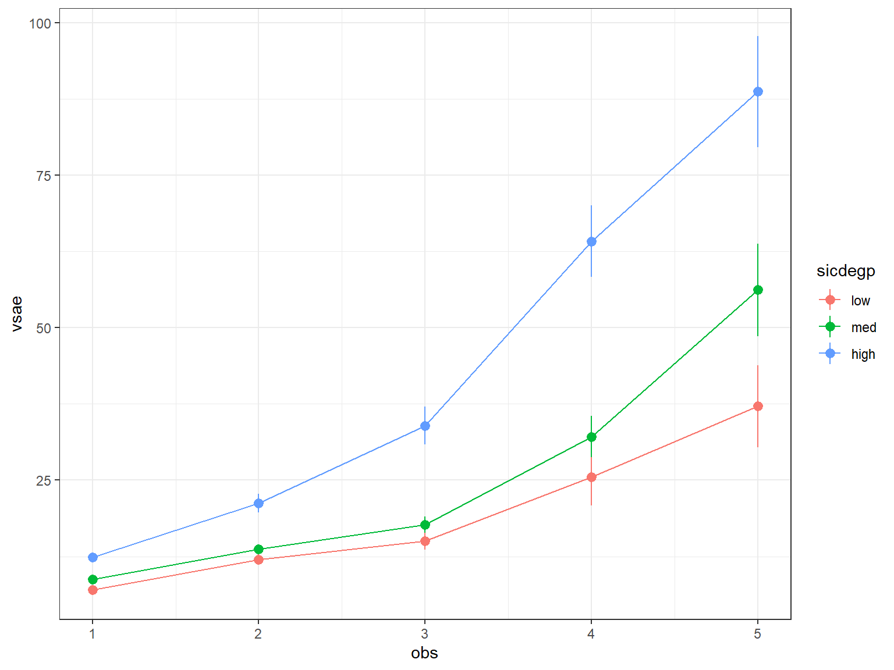
11.2.7.2 Manually Summarized
data_long %>%
dplyr::group_by(sicdegp, age2) %>% # specify the groups
dplyr::summarise(vsae_n = n(), # count of valid scores
vsae_mean = mean(vsae), # mean score
vsae_sd = sd(vsae), # standard deviation of scores
vsae_sem = vsae_sd / sqrt(vsae_n)) %>%
dplyr::mutate(age = age2 + 2) %>%
ggplot() +
aes(x = age,
y = vsae_mean,
color = sicdegp) +
geom_errorbar(aes(ymin = vsae_mean - vsae_sem, # mean +/- one SE for the mean
ymax = vsae_mean + vsae_sem),
width = .25) +
geom_point(aes(shape = sicdegp),
size = 3) +
geom_line(aes(group = sicdegp)) +
theme_bw() +
scale_x_continuous(breaks = c(2, 3, 5, 9, 13)) +
labs(x = "Age of Child, Years",
y = "Vineland Socialization Age Equivalent",
color = "Sequenced Inventory of Communication Development:",
shape = "Sequenced Inventory of Communication Development:",
linetype = "Sequenced Inventory of Communication Development:") +
theme(legend.position = "bottom",
legend.key.width = unit(2, "cm"))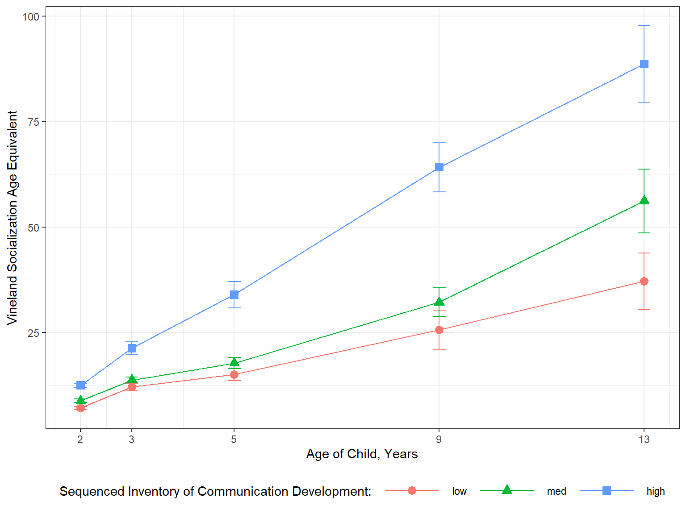
11.3 Model 1: Full model with ‘loaded’ mean structure
Take top-down approach: Quadratic regression model, describing vsae as a function of age2
Each child has a unique parabolic trajectory over time, with coefficients that vary randomly around fixed-effects defining a mean growth curve for each SICD group. Since there is no
age= 0 in our data, we will use theage2variables, which isage-2, so that intercept has meaning (mean at baseline age).
I()denotes an internal calculated variable
Fixed-effects
I(age-2)ageI((age-2)^2)quadratic age or age-squared,sicdegpSICD group (reference group = low)SICD group x age/age-squared interactions
Random-effects
intercept
age and age-squared
11.3.1 Fit the Model
fit_lmer_1_re <- lmerTest::lmer(vsae ~ I(age-2)*sicdegp + I((age-2)^2)*sicdegp +
(I(age-2) + I((age-2)^2) | childid),
data = data_long,
REML = TRUE,
control = lmerControl(optimizer = "optimx", # get it to converge
calc.derivs = FALSE,
optCtrl = list(method = "nlminb",
starttests = FALSE,
kkt = FALSE)))11.3.2 Table of Prameter Estimates
Est | (SE) | p | |
|---|---|---|---|
(Intercept) | 8.40 | (0.75) | < .001*** |
I(age - 2) | 2.28 | (0.74) | .002** |
sicdegp | |||
low | — | — | |
med | 1.27 | (0.99) | .201 |
high | 5.39 | (1.11) | < .001*** |
I((age - 2)^2) | 0.07 | (0.08) | .403 |
I(age - 2) * sicdegp | |||
I(age - 2) * med | 0.43 | (0.98) | .665 |
I(age - 2) * high | 3.31 | (1.08) | .002** |
sicdegp * I((age - 2)^2) | |||
med * I((age - 2)^2) | 0.00 | (0.11) | .999 |
high * I((age - 2)^2) | 0.14 | (0.12) | .253 |
childid.var__(Intercept) | 1.26 | ||
childid.cov__(Intercept).I(age - 2) | -0.17 | ||
childid.cov__(Intercept).I((age - 2)^2) | 0.41 | ||
childid.var__I(age - 2) | 14.03 | ||
childid.cov__I(age - 2).I((age - 2)^2) | -0.61 | ||
childid.var__I((age - 2)^2) | 0.16 | ||
Residual.var__Observation | 37.21 | ||
Note. Est = estimated regresssion coefficient for fixed effects and varaince/covariance estimates for random effects. p = significance from Wald t-test for parameter estimate using Satterthwaite's method for degrees of freedom. | |||
* p < .05. ** p < .01. *** p < .001. | |||
11.3.3 Plot of the Estimated Marginal Means
Note: the \(x-axis\) is the age variable back on its original scale
interactions::interact_plot(model = fit_lmer_1_re, # model name
pred = age, # x-axis variable (must be continuous)
modx = sicdegp, # seperate lines
interval = TRUE) + # shaded bands
scale_x_continuous(breaks = c(2, 3, 5, 9, 13)) +
theme_bw()
Figure 11.1
Model 1: Loaded Means Structure
11.4 Model 2A: Drop Random Intercepts
Note: There seems to be relatively little variation in baseline measurements of VSAE across individuals in the same SICD group, so the variation at age 2 can be attributed to random error, rather than between-subject variation.
This indicates we may want to try removing the random intercepts, while retaining the same fixed- and other random-effects.
This new model implies that children have common initial VSAE value at age 2, given their SICD group.
11.4.2 Assess the Signifcance
Data: data_long
Models:
fit_lmer_2a_re: vsae ~ I(age - 2) * sicdegp + I((age - 2)^2) * sicdegp + (0 + I(age - 2) + I((age - 2)^2) | childid)
fit_lmer_1_re: vsae ~ I(age - 2) * sicdegp + I((age - 2)^2) * sicdegp + (I(age - 2) + I((age - 2)^2) | childid)
npar AIC BIC logLik -2*log(L) Chisq Df Pr(>Chisq)
fit_lmer_2a_re 13 4587.0 4644.2 -2280.5 4561.0
fit_lmer_1_re 16 4586.5 4657.0 -2277.2 4554.5 6.4635 3 0.09111 .
---
Signif. codes: 0 '***' 0.001 '**' 0.01 '*' 0.05 '.' 0.1 ' ' 1The more complicated model (including random intercepts) does NOT fit better, thus the random intercepts may be removed from the model. Model 2a is better than Model 1
11.5 Model 2B: Drop Random Quadratic Slope
We should formally test the necessity of quadratic age random-effect.
Comparison of nested models with REML-based LRT using a 50:50 mixture χ2-distribution with 1 and 2 df Difference of 2 covariance parameters
11.5.2 Assess the Signifcance
Data: data_long
Models:
fit_lmer_2b_re: vsae ~ I(age - 2) * sicdegp + I((age - 2)^2) * sicdegp + (0 + I(age - 2) | childid)
fit_lmer_2a_re: vsae ~ I(age - 2) * sicdegp + I((age - 2)^2) * sicdegp + (0 + I(age - 2) + I((age - 2)^2) | childid)
npar AIC BIC logLik -2*log(L) Chisq Df Pr(>Chisq)
fit_lmer_2b_re 11 4669.3 4717.7 -2323.7 4647.3
fit_lmer_2a_re 13 4587.0 4644.2 -2280.5 4561.0 86.34 2 < 2.2e-16 ***
---
Signif. codes: 0 '***' 0.001 '**' 0.01 '*' 0.05 '.' 0.1 ' ' 1The more complicated model (including random intercepts) DOES fit better, thus the random slopes for both the linear AND the quadratic effect of age should be retained in the model. Model 2a is better than model 2b
11.6 Model 3: Drop Quadratic Time Fixed Effect
Fit the previous ‘best’ model via ML, not REML to compare nested model that differe in terms of fixed effects only
11.6.2 Assess the Signifcance
Data: data_long
Models:
fit_lmer_3_ml: vsae ~ I(age - 2) * sicdegp + (0 + I(age - 2) + I((age - 2)^2) | childid)
fit_lmer_2a_ml: vsae ~ I(age - 2) * sicdegp + I((age - 2)^2) * sicdegp + (0 + I(age - 2) + I((age - 2)^2) | childid)
npar AIC BIC logLik -2*log(L) Chisq Df Pr(>Chisq)
fit_lmer_3_ml 10 4584.4 4628.5 -2282.2 4564.4
fit_lmer_2a_ml 13 4582.1 4639.3 -2278.0 4556.1 8.3704 3 0.03895 *
---
Signif. codes: 0 '***' 0.001 '**' 0.01 '*' 0.05 '.' 0.1 ' ' 1The more complicated model (including fixed interaction between quadratic time and SICD group) DOES fit better, thus the higher level interaction should be retained in the model. Model 2a is better than model 3.
11.7 Final Model
11.7.1 Table of Parameter Esitmates
Est | (SE) | p | |
|---|---|---|---|
(Intercept) | 8.41 | (0.74) | < .001*** |
I(age - 2) | 2.27 | (0.74) | .002** |
sicdegp | |||
low | — | — | |
med | 1.26 | (0.97) | .195 |
high | 5.36 | (1.09) | < .001*** |
I((age - 2)^2) | 0.07 | (0.08) | .363 |
I(age - 2) * sicdegp | |||
I(age - 2) * med | 0.43 | (0.98) | .662 |
I(age - 2) * high | 3.33 | (1.08) | .002** |
sicdegp * I((age - 2)^2) | |||
med * I((age - 2)^2) | 0.00 | (0.10) | .995 |
high * I((age - 2)^2) | 0.13 | (0.11) | .243 |
childid.var__I(age - 2) | 13.99 | ||
childid.cov__I(age - 2).I((age - 2)^2) | -0.44 | ||
childid.var__I((age - 2)^2) | 0.13 | ||
Residual.var__Observation | 37.99 | ||
Note. Est = estimated regresssion coefficient for fixed effects and varaince/covariance estimates for random effects. p = significance from Wald t-test for parameter estimate using Satterthwaite's method for degrees of freedom. | |||
* p < .05. ** p < .01. *** p < .001. | |||
11.7.2 Interpretation of Fixed Effects
11.7.2.1 Reference Group: low SICD group
\(\gamma_{0}\) = 8.408 is the estimated marginal mean VSAE score for children in the
lowSICD, at 2 years of age\(\gamma_{a}\) = 2.269 and \(\gamma_{a^2}\) = 0.072 are the fixed effects for age and age-squared on VSAE for children in the
lowSICD group (change over time)
Thus the equation for the estimated marginal mean VASE trajectory for the low SICD group is:
\[ \begin{align*} VASE =& \gamma_{0} + \gamma_{a} (AGE - 2) + \gamma_{a^2} (AGE - 2)^2 \\ =& 8.408 + 2.269 (AGE - 2) + 0.072 (AGE - 2)^2 \\ \end{align*} \]
11.7.2.2 First Comparison Group: medium SICD group
\(\gamma_{med}\) = 1.264 is the DIFFERENCE in the estimated marginal mean VSAE score for children in the
mediumvs. thelowSICD, at 2 years of age\(\gamma_{med:\;a}\) = 0.429 and \(\gamma_{med:\;a^2}\) = 0.001 are the DIFFERENCE in the fixed effects for age and age-squared on VSAE for children in the
mediumvs. thelowSICD group
Thus the equation for the estimated marginal mean VASE trajectory for the medium SICD group is:
\[ \begin{align*} VASE =& (\gamma_{0} + \gamma_{med}) + (\gamma_{a} + \gamma_{med:\;a}) (AGE - 2) + (\gamma_{a^2} + \gamma_{med:\;a^2})(AGE - 2)^2 \\ =& (8.408 + 1.264) + (2.269 + 0.429) (AGE - 2) + (0.072 + 0.001)(AGE - 2)^2 \\ =& 9.673 + 2.698 (AGE - 2) + 0.073 (AGE - 2)^2 \\ \end{align*} \]
11.7.2.3 Second Comparison Group: high SICD group
\(\gamma_{hi}\) = 5.365 is the DIFFERENCE in the estimated marginal mean VSAE score for children in the
highvs. thelowSICD, at 2 years of age\(\gamma_{hi:\;a}\) = 3.326 and \(\gamma_{hi:\;a^2}\) = 0.133 are the DIFFERENCE in the fixed effects for age and age-squared on VSAE for children in the
highvs. thelowSICD group
Thus the equation for the estimated marginal mean VASE trajectory for the high SICD group is:
\[ \begin{align*} VASE =& (\gamma_{0} + \gamma_{hi}) + (\gamma_{a} + \gamma_{hi:\;a}) (AGE - 2) + (\gamma_{a^2} + \gamma_{hi:\;a^2})(AGE - 2)^2 \\ =& (8.408 + 5.365) + (2.269 + 3.326) (AGE - 2) + (0.072 + 0.133)(AGE - 2)^2 \\ =& 13.773 + 5.595 (AGE - 2) + 0.206 (AGE - 2)^2 \\ \end{align*} \]
11.7.3 Interpretation of Random Effects
Groups Name Variance Std.Dev. Cov
childid I(age - 2) 13.991 3.741
I((age - 2)^2) 0.134 0.366 -0.44
Residual 37.987 6.163 Here a group of observations = a CHILD
11.7.3.1 Residual Varaince
Within-child-variance
- \(e_{ti}\) the residuals associated with observation at time \(t\) on child \(i\)
\[ \sigma^2 = \sigma^2_e = VAR[e_{ti}] = 37.987 \]
11.7.3.2 2 Variance Components
Between-children slope variances
Random LINEAR effect of age variance
- \(u_{1i}\) the DIFFERENCE between child \(i\)’s specific linear component for age and the fixed linear component for age, given their SICD group
\[ \tau_{11} = \sigma^2_{u1} = VAR[u_{1i}] = 13.99 \]
Random QUADRATIC effect of age variance
- \(u_{2i}\) the DIFFERENCE between child \(i\)’s specific quadratic component for age and the fixed quadratic component for age, given their SICD group
\[ \tau_{22} = \sigma^2_{u2} = VAR[u_{2i}] = 0.13 \]
11.7.4 Assumption Checking
The residuals are:
Assumed to be normally, independently, and identically distributed (conditional on other random-effects)
Assumed independent of random-effects
\[ e_{ti} \sim N(0, \sigma^2) \]
11.7.4.2 Manually with HLMdiag and ggplot2
fit_lmer_2a_re %>%
HLMdiag::hlm_augment(level = 1,
include.ls = FALSE,
standardized = TRUE) %>%
ggplot(aes(x = .resid)) +
geom_histogram(bins = 40,
color = "gray20",
alpha = .2) +
theme_bw() +
labs(main = "Histogram")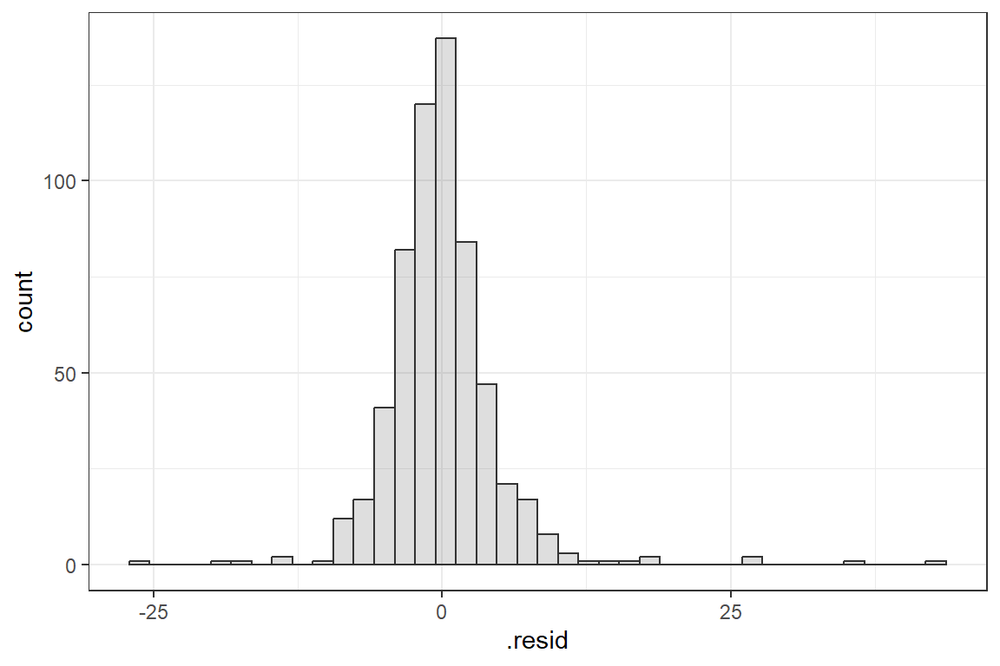
fit_lmer_2a_re %>%
ranef() %>%
data.frame() %>%
ggplot(aes(sample = condval)) +
geom_qq() +
geom_qq_line() +
facet_wrap(~ term, scale = "free_y")+
theme_bw() +
labs(main = "Random Slopes")
fit_lmer_2a_re %>%
HLMdiag::hlm_augment(level = 1,
include.ls = FALSE,
standardized = TRUE) %>%
ggplot(aes(x = .fitted,
y = .resid)) +
geom_hline(yintercept = 0, color = "red") +
geom_point() +
geom_smooth() +
theme_bw() +
labs(main = "Residual Plot")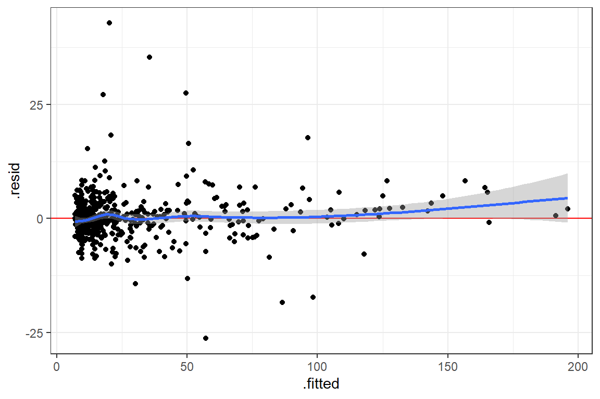
fit_lmer_2a_re %>%
HLMdiag::hlm_augment(level = 1,
include.ls = FALSE,
standardized = TRUE) %>%
ggplot(aes(sample = .resid)) +
geom_qq()+
stat_qq_line() +
theme_bw()
11.7.5 Plot of the Estimated Marginal Means
11.7.5.1 Quick and Default
Note: the \(x-axis\) is the age variable, back on its original scale
interactions::interact_plot(model = fit_lmer_2a_re, # model name
pred = age, # x-axis variable (must be continuous)
modx = sicdegp, # seperate lines
interval = TRUE) + # shaded bands
scale_x_continuous(breaks = c(2, 3, 5, 9, 13))
Figure 11.2
Final Model (2a)
interactions::interact_plot(model = fit_lmer_2a_re, # model name
pred = age, # x-axis variable (must be continuous)
modx = sicdegp, # separate lines
interval = TRUE,
x.label = "Age of Child, in years",
y.label = "Estimated Marginal Mean\nVineland Socialization Age Equivalent",
legend.main = "Initial Communication (SICD)",
modx.labels = c("Low", "Medium", "High"),
colors = c("black", "black", "black")) +
scale_x_continuous(breaks = c(2, 3, 5, 9, 13)) +
scale_y_continuous(breaks = seq(from = 0, to = 120, by = 20)) +
theme_bw() +
theme(legend.position = c(0, 1),
legend.justification = c(-0.1, 1.1),
legend.background = element_rect(color = "black"),
legend.key.width = unit(2, "cm"))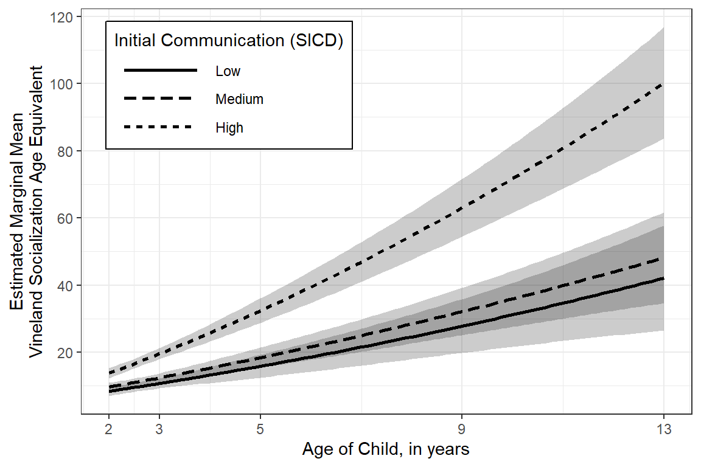
11.7.5.2 More Customized - Color
This version would look better on a poster or in a slide presentation.
effects::Effect(focal.predictors = c("age","sicdegp"), # variables involved in interactions
mod = fit_lmer_2a_re,
xlevels = list(age2 = seq(from = 2, to = 13, by = .1))) %>% # add more values to smooth out the prediction lines and ribbons
data.frame() %>%
dplyr::mutate(sicdegp = factor(sicdegp,
levels = c("high", "med", "low"),
labels = c("High", "Medium", "Low"))) %>%
ggplot(aes(x = age,
y = fit,
group = sicdegp)) +
geom_ribbon(aes(ymin = lower, # 95% Confidence Intervals
ymax = upper,
fill = sicdegp),
alpha = .3) +
geom_line(aes(linetype = sicdegp,
color = sicdegp),
size = 1) +
scale_x_continuous(breaks = c(2, 3, 5, 9, 13)) + # mark values that were actually measured
scale_y_continuous(breaks = seq(from = 0, to = 120, by = 20)) +
scale_linetype_manual(values = c("solid", "longdash", "dotted")) +
theme_bw() +
theme(legend.position = c(0, 1),
legend.justification = c(-0.1, 1.1),
legend.background = element_rect(color = "black"),
legend.key.width = unit(2.5, "cm")) +
labs(x = "Age of Child, in years",
y = "Estimated Marginal Mean\nVineland Socialization Age Equivalent",
linetype = "Initial Communication (SICD)",
fill = "Initial Communication (SICD)",
color = "Initial Communication (SICD)")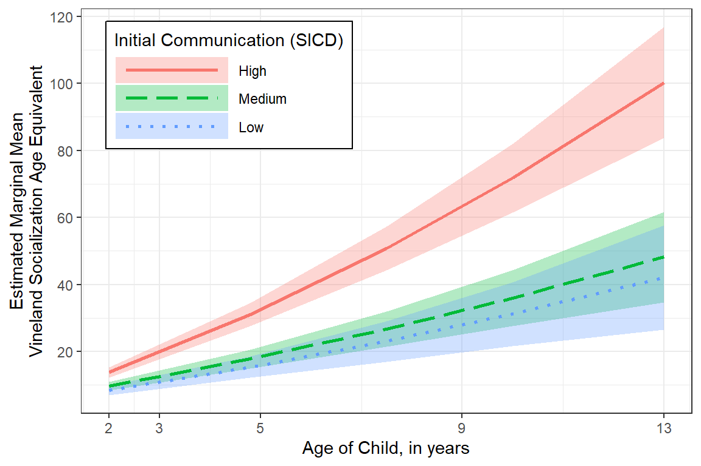
11.7.5.3 More Customized - Black and White
This version would be better for a publication.
effects::Effect(focal.predictors = c("age","sicdegp"),
mod = fit_lmer_2a_re,
xlevels = list(age2 = seq(from = 2, to = 13, by = .05))) %>%
data.frame() %>%
dplyr::mutate(sicdegp = factor(sicdegp,
levels = c("high", "med", "low"),
labels = c("High", "Medium", "Low"))) %>%
ggplot(aes(x = age,
y = fit,
group = sicdegp)) +
geom_ribbon(aes(ymin = lower,
ymax = upper,
fill = sicdegp),
alpha = .4) +
geom_line(aes(linetype = sicdegp),
size = .7) +
scale_x_continuous(breaks = c(2, 3, 5, 9, 13)) +
scale_y_continuous(breaks = seq(from = 0, to = 120, by = 20)) +
scale_linetype_manual(values = c("solid", "longdash", "dotted")) +
scale_fill_manual(values = c("gray10", "gray40", "gray60")) +
theme_bw() +
theme(legend.position = c(0, 1),
legend.justification = c(-0.1, 1.1),
legend.background = element_rect(color = "black"),
legend.key.width = unit(2, "cm")) +
labs(x = "Age of Child, in years",
y = "Estimated Marginal Mean\nVineland Socialization Age Equivalent",
linetype = "Initial Communication (SICD)",
fill = "Initial Communication (SICD)",
color = "Initial Communication (SICD)")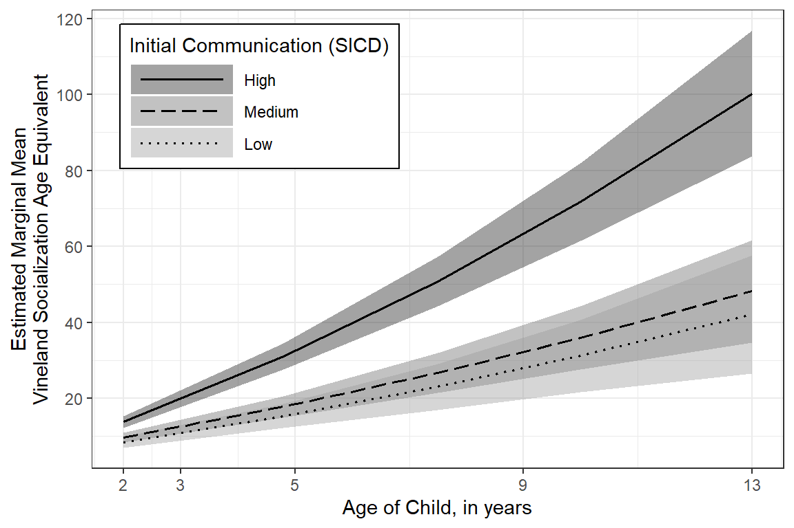
11.7.6 Post Hoc Compairisons
$emmeans
sicdegp emmean SE df lower.CL upper.CL
low 42.1 7.97 135 26.3 57.9
med 48.2 6.90 131 34.5 61.8
high 100.2 8.45 131 83.5 116.9
Degrees-of-freedom method: kenward-roger
Confidence level used: 0.95
$contrasts
contrast estimate SE df t.ratio p.value
low - med -6.07 10.5 133 -0.575 0.8335
low - high -58.10 11.6 133 -5.002 <.0001
med - high -52.03 10.9 131 -4.772 <.0001
Degrees-of-freedom method: kenward-roger
P value adjustment: tukey method for comparing a family of 3 estimates [1] 7.188084 sicdegp emmean SE df lower.CL upper.CL
low 42.1 7.97 135 26.3 57.9
med 48.2 6.90 131 34.5 61.8
high 100.2 8.45 131 83.5 116.9
Degrees-of-freedom method: kenward-roger
Confidence level used: 0.95 contrast estimate SE df t.ratio p.value
low - med -6.07 10.5 133 -0.575 0.8335
low - high -58.10 11.6 133 -5.002 <.0001
med - high -52.03 10.9 131 -4.772 <.0001
Degrees-of-freedom method: kenward-roger
P value adjustment: tukey method for comparing a family of 3 estimates fit_lmer_2a_re %>%
emmeans::emmeans(~ sicdegp,
at = list(age = 13)) %>%
pairs() %>%
data.frame() %>%
dplyr::mutate(SE = glue::glue("({apaSupp::apan(SE, 2)})")) %>%
dplyr::mutate(SMD = estimate/apaSupp::lmer_sd(fit_lmer_2a_re)) %>%
dplyr::mutate(p_Unadj = apaSupp::p_num(p.value)) %>%
dplyr::mutate(p_Adj = p.adjust(p.value, method = "fdr")%>%
apaSupp::p_num()) %>%
dplyr::select("Compare" = contrast,
"Difference in EMM_Est" = estimate,
"Difference in EMM_(SE)" = SE,
SMD, p_Unadj, p_Adj) %>%
flextable::flextable() %>%
flextable::separate_header() %>%
apaSupp::theme_apa(caption = "Pairwise Comparisons of Estimated Marginal Means",
general_note = "SMD = Standardized mean difference, a Cohen's d like effect size. Significance is provided as unadjusted (Unadj) and adjusted (Adj) using the false discovery rate method.") %>%
flextable::hline(part = "header", i = 1)Compare | Difference in EMM | SMD | p | ||
|---|---|---|---|---|---|
Est | (SE) | Unadj | Adj | ||
low - med | -6.07 | (10.54) | -0.84 | .833 | .833 |
low - high | -58.10 | (11.62) | -8.08 | < .001*** | < .001*** |
med - high | -52.03 | (10.90) | -7.24 | < .001*** | < .001*** |
Note. SMD = Standardized mean difference, a Cohen's d like effect size. Significance is provided as unadjusted (Unadj) and adjusted (Adj) using the false discovery rate method. | |||||
11.7.7 Blups vs. Fixed Effects
BLUP = Best Linear Unbiased Predictor
A BLUP is the specific prediction for an individual supject, showin by black lines below. This includes the fixed effects as well as the specific random effects for a given individual.
Comparatively, the blue lines below display the predictions for fixed effects only.
data_long %>%
dplyr::mutate(sicdegp = fct_recode(sicdegp,
"Low Communication" = "low",
"Medium Communication" = "med",
"High Communication" = "high")) %>%
dplyr::mutate(pred_fixed = predict(fit_lmer_2a_re, re.form = NA)) %>% # fixed effects only
dplyr::mutate(pred_wrand = predict(fit_lmer_2a_re)) %>% # fixed and random effects together
ggplot(aes(x = age,
y = vsae)) +
geom_line(aes(y = pred_wrand, # BLUP = fixed and random effects together
group = childid,
color = "BLUP",
size = "BLUP")) +
geom_line(aes(y = pred_fixed, # fixed effects only
group = sicdegp,
color = "Fixed",
size = "Fixed")) +
scale_color_manual(name = "Model: ",
values = c("BLUP" = "black",
"Fixed" = "blue")) +
scale_size_manual(name = "Model: ",
values = c("BLUP" = .5,
"Fixed" = 1.5)) +
facet_grid(. ~ sicdegp) +
theme_bw() +
scale_x_continuous(breaks = c(2, 3, 5, 9, 13)) +
labs(x = "Age, in years",
y = "Estimated Marginal Mean\nVineland Socialization Age Equivalent") +
theme(legend.position = "bottom",
legend.key.width = unit(1.5, "cm"))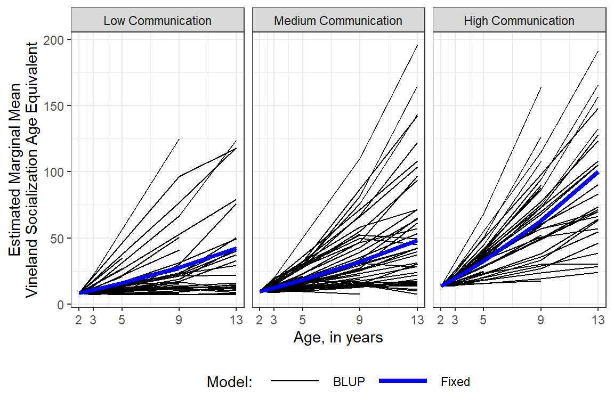
data_long %>%
dplyr::mutate(pred_fixed = predict(fit_lmer_2a_re, re.form = NA)) %>%
dplyr::mutate(pred_wrand = predict(fit_lmer_2a_re)) %>%
dplyr::filter(childid %in% sample(levels(data_long$childid), 25)) %>% # 25 randomly sampled children
ggplot(aes(x = age,
y = vsae)) +
geom_point(aes(color = sicdegp),
size = 3) +
geom_line(aes(y = pred_wrand,
linetype = "BLUP",
size = "BLUP"),
color = "black") +
geom_line(aes(y = pred_fixed,
color = sicdegp,
linetype = "Fixed",
size = "Fixed")) +
scale_linetype_manual(name = "Model: ",
values = c("BLUP" = "longdash",
"Fixed" = "solid")) +
scale_size_manual(name = "Model: ",
values = c("BLUP" = .5,
"Fixed" = 1)) +
facet_wrap(. ~ childid, labeller = "label_both") +
theme_bw() +
scale_x_continuous(breaks = c(2, 3, 5, 9, 13)) +
theme(legend.position = "bottom",
legend.key.width = unit(1.5, "cm")) +
labs(x = "Age, in years",
y = "Estimated Marginal Mean\nVineland Socialization Age Equivalent",
color = "Communication:")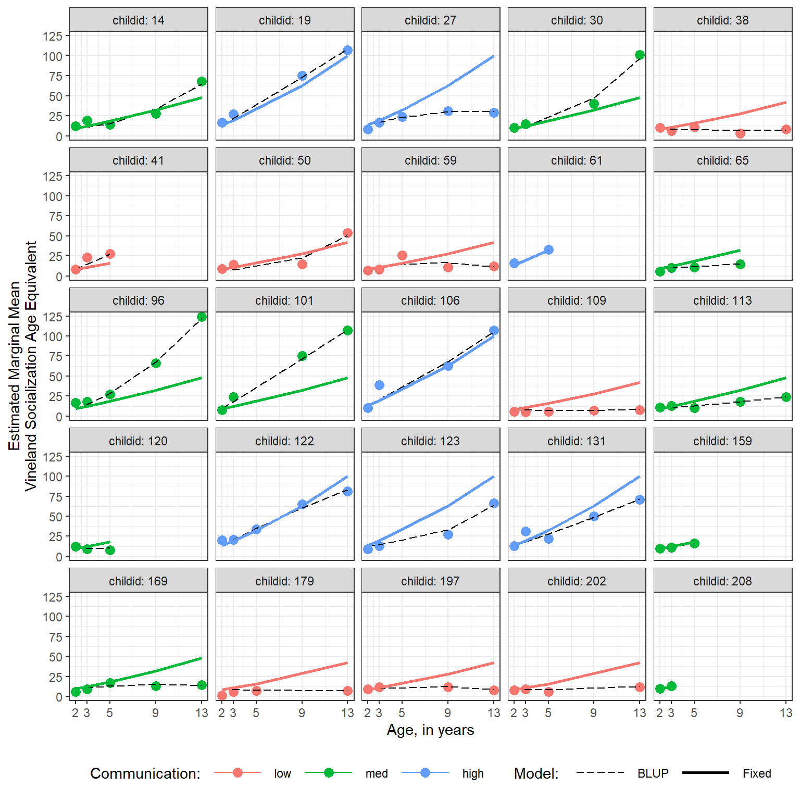